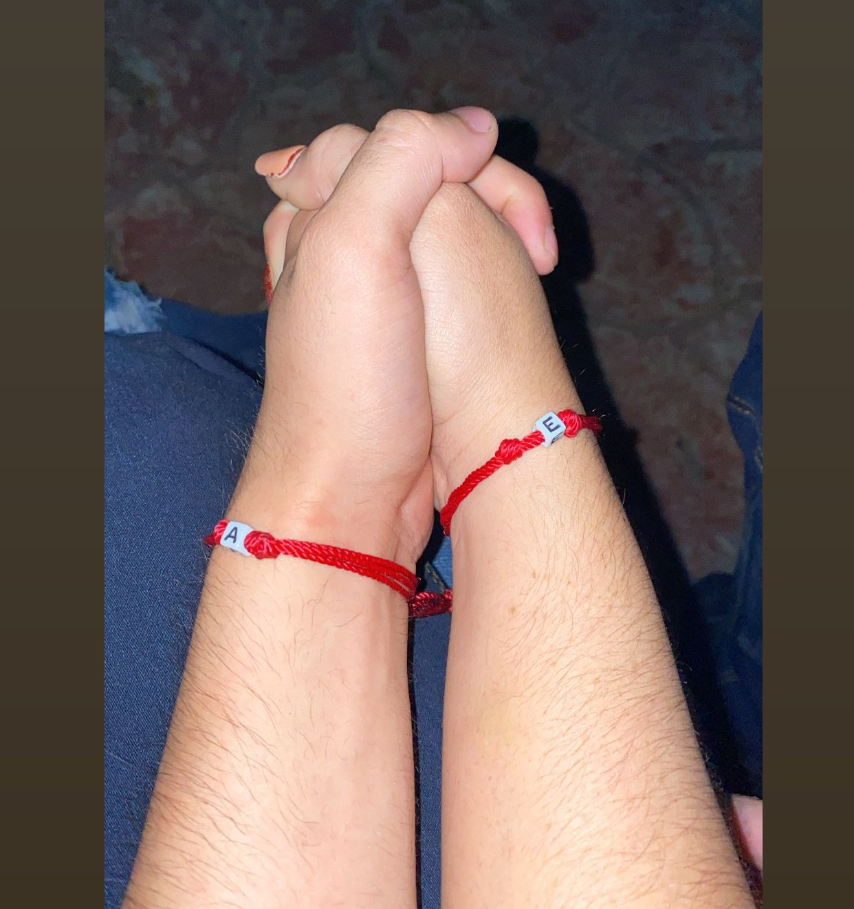

Galería de Nuestro Vida🥰😍
¡Feliz Aniversario Mor😘! A&E 23/12❤️
Nuestra Historia
Recuerdos inolvidables
Momentos felices
Juntos por siempre

Días especiales
Siempre a su lado
Mi Princesa Hermosa
¡La amo!